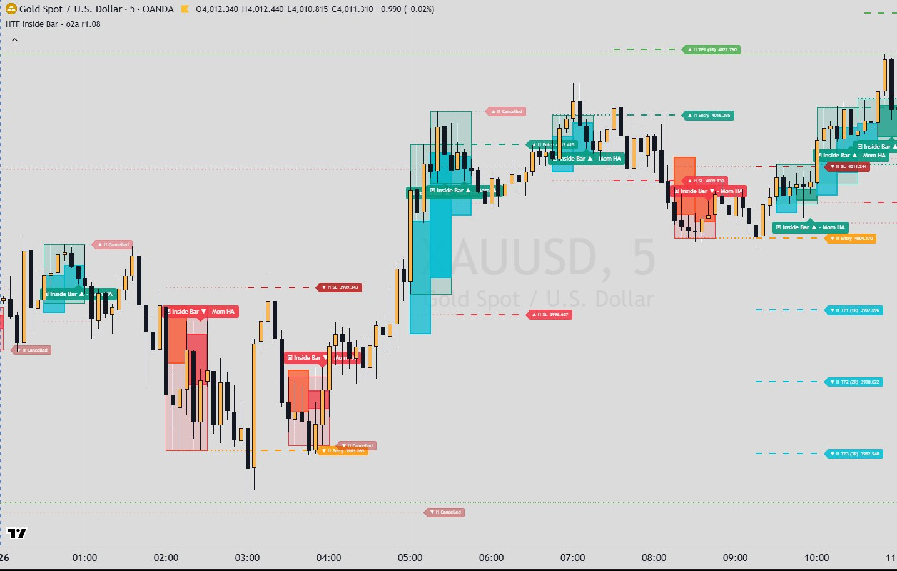

Indicators / HTF Inside Bar
Price action · HTFHTF Inside Bar r1.08
Detects inside bars on higher-timeframe candles: a 'mother' candle followed by a smaller candle that stays within it (five definitions, including a sweep variant). Optional trend and candle filters (moving average, slope, anchored VWAP, swing VWAP, wick, body, RSI, TSI, volume) decide which patterns count. For each pattern it places a planned entry and stop, tracks the fill, three R-multiple targets and an optional trailing target, and summarises outcomes in a table. Described from the MT5 port; no Pine copy was available.

What it draws
- The two higher-timeframe candles of each pattern (mother and inside bar), optionally as Heikin Ashi with momentum colours
- Mother range box (green for long, red for short, grey for breakout-both-ways)
- Pattern label: '▣ Inside Bar ▲/▼', '▣ IB Sweep', or '◆ Breakout', with tags for the momentum and filter settings and optional candle stats (wick %, body %, RSI, TSI, volume ratio)
- Waiting order: dotted entry and SL lines with a label such as 'I1 Buy Stop'
- Filled position: dashed entry, SL, TP1, TP2, TP3 lines with labels; optional trailing SL / target lines
- Plotted filter lines (each optional): TF Smooth MA, TF Slope MA, Anchored VWAP, Swing-High and Swing-Low anchored VWAPs
- Results table: counts of SL / TP1 / TP2 / TP3 outcomes, the entry and stop types, and each enabled filter's current long / short pass (✓ / ✗)
Signals
- Inside Bar pattern
- Checked when a new HTF candle starts, on the last two completed HTF candles: Mother = the older, Inside = the newer. Type 'Regular': inside body within mother's high-low; 'Full': inside body within mother's body and inside high/low within mother's high/low; 'Body Only': inside body within mother's body; 'Wick Only': inside high at or below mother high and inside low at or above mother low; 'Sweep': the inside candle wicks beyond one side of the mother and closes back inside its range. The pattern counts only if the momentum Heikin Ashi filter (optional) and all enabled filters pass.
- Direction
- 'First' (default): from the mother candle's colour; 'Second': from the inside candle's colour; 'Breakout': both directions are armed and the first to fill cancels the other. For Sweep, a sweep of the low means long and a sweep of the high means short.
- I1 entry fill
- Entry types: Mother Breakout (stop order at mother high for long / low for short, default), Inside Breakout (stop at inside high/low), Close Beyond Mother (fills at the close of the first bar that closes beyond the entry level), Mother Breakout Retest (after a close beyond, a limit back at the mother level), Mother 50% (limit at the mother midpoint), Market (at confirmation). A waiting order is cancelled if the stop level is touched first, expires after N HTF bars if set, and with 'Re-check Filters at Fill' it is closed as 'Filtered' when the trend filters no longer pass at the fill.
- Outcome
- After a fill, the position closes at SL or at TP3; the best target reached (TP1 1R, TP2 2.5R, TP3 6R by default) is recorded. With TrailerR on, after the start target is hit the stop moves to entry and then steps up by the SL jump each time the target (stepped by the TP jump) is reached.
Main settings
| Setting | Default | What it does |
|---|---|---|
| Timeframe / Use Current Timeframe | M15 / off (MT5 port defaults) | Timeframe the pattern is detected on. |
| Inside Bar Type | Wick Only | Regular, Full, Body Only, Wick Only or Sweep (definitions above). |
| Direction By | First (mother candle) | First, Second or Breakout (both sides, one cancels the other). |
| Momentum HA Mother Filter | off | Requires the mother's Heikin Ashi candle to be a momentum candle (no counter-trend wick) in the trade direction. |
| Trend filters: TF Smooth MA / TF Slope / Anchored VWAP / TF Swing AVWAP | Off / Off / Normal (Session anchor) / Normal (H1, Latest Swing, pivots 8/8) | Each Off, Normal or Inverted: price above (long) or below (short) the MA or VWAP, or MA slope angle beyond the minimum (5°). |
| Candle filters: Wick / Body / RSI / TSI / Volume, applied on | TSI Normal (25/13/13, Above Signal); others Off; applied on Mother | Wick at least 50%, body at most 33%, RSI ≤ / ≥ 50, TSI above/below its signal or zero, volume above its 20-bar average; on the mother, inside or combined candle. |
| Entry Type | Mother Breakout (Stop) | How and where the entry is placed (see I1 entry fill). |
| Stop Loss Type | ATR (HTF) 14 x 1.0 | Mother extreme, inside extreme, pattern extreme, mother 50%, ATR, or fixed ticks; extreme-based stops get a pad of the average wick (SMA 200) x multiplier. |
| I1 TP1 / TP2 / TP3 (R) | 1.0 / 2.5 / 6.0 | Targets as multiples of the entry-to-stop distance. |
| I1 TrailerR | off | Trailing target/stop stepping in R units (start at TP1 or TP2). |
Timeframes
Pattern timeframe input (MT5 default M15) or the current chart timeframe. Separate timeframe inputs for the Smooth MA, Slope and Swing AVWAP filters (MT5 default H1 each). The anchored VWAP can anchor to Session, Asia / London / NY kill zones, Week, Month, Quarter, Year or a custom time; kill-zone hours are inputs (MT5 defaults 0300-0700, 0900-1200, 1400-1700 at UTC+3).
Alerts
MT5 port: none. TradingView original: unclear (Pine source not available).
Closed candles and repainting
- Port header: every higher timeframe (pattern, MA, slope, swing) is read as request.security with lookahead_on on [1] values, i.e. the last completed bar of that timeframe, available from the first chart bar after it closes.
- Chart-timeframe series (anchored VWAP, swing AVWAP, chart ATR) are read on the last closed chart bar ([1]).
- The pattern is evaluated once when a new HTF candle starts, so it appears after the inside candle has closed; order fills and outcomes are checked bar by bar on the chart timeframe; the forming chart bar is worked on a copy of the state.
On MetaTrader 5
- MT5 defaults are the author's live TradingView chart settings (2026-10-08), not necessarily the Pine defaults.
- MT5-only: mid price option (bid + half spread), chart bars calculated (default 20,000), warm-up history on the other timeframes, Pine-style 500-object limit, optional CSV dump.
- Kill-zone times are converted from the broker server clock using the US daylight-saving rule (server UTC+3 in US summer, UTC+2 otherwise); the custom anchor is in server time; 'Fixed Ticks' uses the symbol's point size.
- Transparency is emulated by blending colours with the chart background.